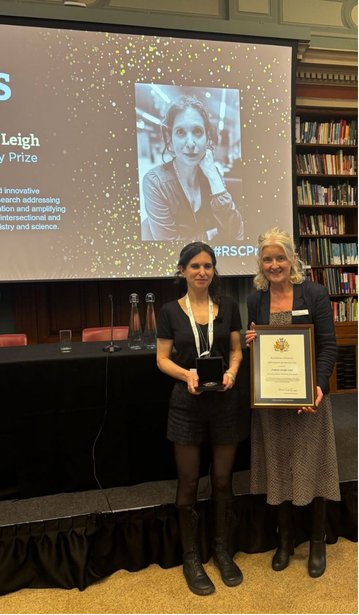
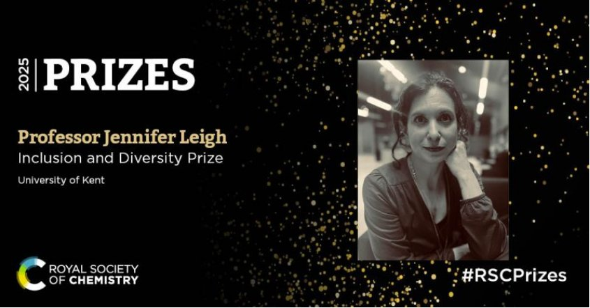

About
Dr Leigh is an award-winning chemist turned interdisciplinary sociologist whose work uses embodied, reflective and creative practices to advance social justice. She addresses and highlights experiences of marginalisation in academia, science and society shaped by intersecting factors including disability (ableism), gender, race and ethnicity, caring responsibilities and socioeconomic factors.
Dr Leigh developed Embodied Inquiry, a transformative approach to research that captures robust data while building the trust, creativity, community and emotional connection needed to make real change. Rather than studying scientists from the outside, she works with them — applying Embodied Inquiry so that underrepresented groups too often left unheard are given a voice.
The rest of this paragraph was overlapped by an image in the source file and couldn't be read reliably — including the sentence about reshaping inclusion practices and the NADSN STEMM Action Group white paper (link: kar.kent.ac.uk/109489), and the italicised title you mentioned. Drop the finished text in here.


Recognition
- Royal Society of Chemistry 2025 Inclusion and Diversity Prize — for leading exceptional and innovative interdisciplinary evidence-based research addressing and highlighting systemic discrimination, and amplifying underrepresented groups to create intersectional and inclusive research cultures in chemistry and science.
- Shaw Trust Disability Power 100 — recognised for her work in Education and Research.
Dr Leigh is an internationally in-demand speaker, having recently addressed the Royal Institution on Why We Need to Worry About Disability in Science, and spoken at the Royal Society of Chemistry's Global Women's Breakfast.